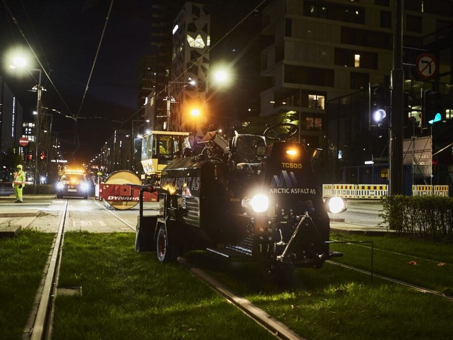

01
Fasadestillas og rullestillas
Utleie og komplett montering av sikre fasadestillas for maling, takarbeid, vindusbytte og rehabilitering på eneboliger, bygårder og næringsbygg.
- Ferdig montert med grønt kort
- Tilpasset alle fasadetyper
- Fleksibel leieperiode